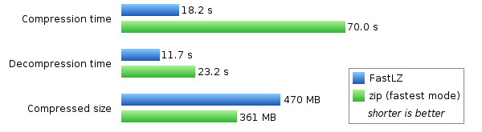

free, open-source, portable real-time compression library
Compression of 1 billion byte text file. See more benchmark result.

 blazing fast
blazing fast
FastLZ is very fast and thus suitable
for real-time compression and decompression.
Perfect to gain more space with almost zero effort.
 "F" for freedom
"F" for freedom
Distributed under the permissive MIT license,
FastLZ can be used in any open-source applications
as well as proprietary applications.
 no compromise
no compromise
FastLZ is very lightweight, threadsafe and has extremely low overhead.
Decompression even requires no memory. And that is still with portable ANSI C.
 everyone is created equal
everyone is created equal
Runs just fine under Microsoft Windows, Linux, other Unix variants,
and even DOS. Works equally well in x86, Itanium and UltraSPARC machines.